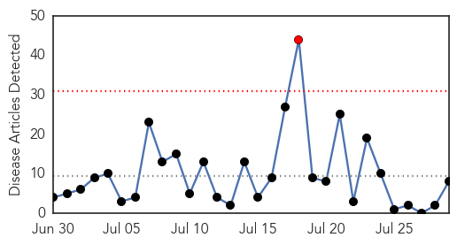

30 Day Trends
Web: 1 alerts, 0 warnings
Twitter: 3 alerts, 0 warnings
Top Articles:
- 1.000
- Caribbean mosquito-borne virus strikes St. Louis County woman : Lifestyles
- 0.999
- Chikungunya Update for 28 July - Cayman Islands
- 0.999
- First case of Chikungunya reported in St. Louis County
- 0.998
- Thirty-five U.S. states report travel-related cases of chikungunya
- 0.993
- 25 New Jersey residents test positive for Chikungunya virus
- 0.989
- Rays pitcher 3rd case of chikungunya in Pinellas
- 0.963
- New York second in nation for chikungunya
- 0.709
- First Case of Chikungunya Reported in St. Louis; Not Contracted in Area « CBS St. Louis
Top Tweets:
-
No tweets found for Jul 29, 2014
Web/News Articles
Tweets